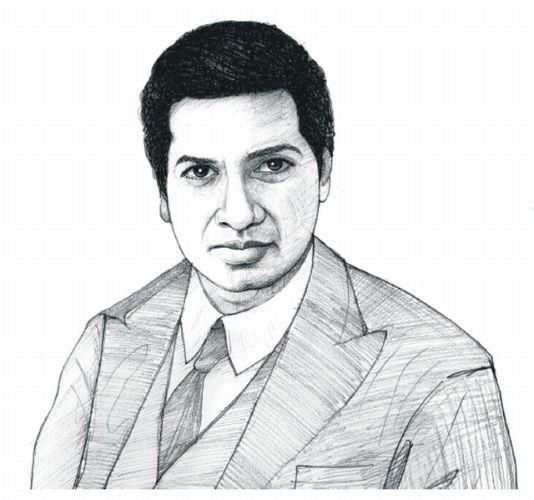

MathsMagic.Com

Ramanujan initially developed his own mathematical research in isolation. According to Hans Eysenck, "he
tried to interest the leading professional mathematicians in his work, but failed for the most part.
Recognising Ramanujan's work as extraordinary, Hardy arranged for him to travel to Cambridge. In his notes,
Hardy commented that Ramanujan had produced groundbreaking new theorems, including some that "defeated me
completely; I had never seen anything in the least like them before", and some recently proven but highly
advanced results.During his short life, Ramanujan independently compiled nearly 3,900 results (mostly
identities and equations). Many were completely novel; his original and highly unconventional results,
such as the Ramanujan prime, the Ramanujan theta function, partition formulae and mock theta functions, have
opened entire new areas of work and inspired a vast amount of further research. Of his thousands of
results, all but a dozen or two have now been proven correct. The Ramanujan Journal, a scientific
journal, was established to publish work in all areas of mathematics influenced by Ramanujan, and his
notebooks—containing summaries of his published and unpublished results—have been analysed and studied for
decades since his death as a source of new mathematical ideas.

Aryabhata (ISO: Āryabhaṭa) or Aryabhata I (476–550 CE) was an Indian
mathematician, physicist and
astronomer of the classical age of Indian mathematics and Indian astronomy. He lived during the Gupta period and
produced works such as the Aryabhatiya (which mentions that in 3600 Kali Yuga, 499 CE, he was 23 years old)
and the Arya-siddhanta.
Aryabhata created a system of phonemic number notation in which numbers were represented by consonant-vowel
monosyllables. Later commentators such as Brahmagupta divide his work into Ganita ("Mathematics"), Kalakriya
("Calculations on Time") and Golapada ("Spherical Astronomy"). His pure mathematics discusses topics such as
determination of square and cube roots, geometrical figures with their properties and mensuration, arithmetric
progression problems on the shadow of the gnomon, quadratic equations, linear and indeterminate equations.
Aryabhata calculated the value of pi (π) to the fourth decimal digit and was likely aware that pi (π) is an
irrational number, around 1300 years before Lambert proved the same. Aryabhata's sine table and his work on
trignometry were extremely influential on the Islamic Golden Age; his works were translated into Arabic and
influenced Al-Khwarizmi and Al-Zarqali.

Shakuntala Devi (4 November 1929 – 21 April 2013) was an Indian mental calculator and
writer, popularly known as the "Human Computer". Her talent earned her a place in the 1982 edition of The
Guinness Book of World Records. However, the certificate for the record was given posthumously on 30 July 2020,
despite Devi achieving her world record on 18 June 1980 at Imperial College, London. Devi was a precocious child
and she demonstrated her arithmetic abilities at the University of Mysore without any formal education.
Devi strove to simplify numerical calculations for students. She wrote a number of books in her later years,
including novels as well as texts about mathematics, puzzles, and astrology. She wrote the book The World of
Homosexuals, which is considered the first study of homosexuality in India. She saw homosexuality in a
positive light and is considered a pioneer in the field.
Shakuntala Devi was born on 4 November 1929 at Bangalore, Karnataka. Her father, C V Sundararaja
Rao, worked as a trapeze artist, lion tamer, tightrope walker and magician in a circus.
He discovered his daughter's ability to memorise numbers while teaching her a card trick when she was about
three years old. Her father left the circus and took her on road shows that displayed her ability at
calculation. She did this without any formal education.

Unlike other prominent ancient Indian astronomers, Varāhamihira does not mention his
date. However, based on hints in his works, modern scholars date him to the 6th century CE; possibly, he also
lived during the last years of the 5th century.
In his Pancha-siddhantika, Varāhamihira refers to the year 427 of the Shaka-kala (also Shakendra-kala or
Shaka-bhupa-kala). Identifying this calendar era with the Shaka era places Varāhamihira in the 505 CE.
Alternative theories identify this calendar era with other eras, placing him before the 5th century CE. However,
these theories are inaccurate, as Varāhamihira must have lived after Aryabhata (born 476 CE), whose work he
refers to. The particulars of the date mentioned by Varāhamihira - Shukla pratipada of the Chaitra month of the
Shaka year 427 - align accurately with 20-21 March 505 CE. Al-Biruni also places Varāhamihira in 505 CE.
In accordance with the contemporary tradition, 505 CE was most probably the year in which Varāhamihira composed
Pancha-Siddhantaka or began planning it. However, some scholars believe that it was the year of
Varāhamihira's birth or of another important event in his life. This is because according to Amaraja, the author
of a commentary on Brahmagupta's Khanda-khadyaka, Varāhamihira died in 587 CE (Shaka year 509).